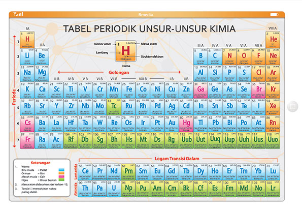

📘 Materi Konfigurasi Elektron Berdasarkan Kulit
Pengertian Konfigurasi Elektron Berdasarkan Kulit Atom
Konfigurasi elektron berdasarkan kulit adalah cara penyusunan elektron dalam atom pada berbagai tingkat energi (kulit). Elektron mengelilingi inti atom pada jalur tertentu yang disebut kulit atau orbit. Setiap kulit memiliki kapasitas maksimum elektron yang dapat ditampung sesuai rumus 2n², dimana n adalah nomor kulit.
💡 Catatan: Kulit elektron dilambangkan dengan huruf K (n=1), L (n=2), M (n=3), N (n=4), dan seterusnya.
Tabel Jumlah Maksimum Elektron per Kulit
| Kulit (n) | Simbol | Rumus (2n²) | Maksimum Elektron | Warna |
|---|---|---|---|---|
| 1 | K | 2 × 1² | 2 | |
| 2 | L | 2 × 2² | 8 | |
| 3 | M | 2 × 3² | 18 | |
| 4 | N | 2 × 4² | 32 |
Contoh Pengisian Elektron
Natrium (Na) - Nomor Atom 11
2K 8L 1M
Elektron valensi: 1
Klorin (Cl) - Nomor Atom 17
2K 8L 7M
Elektron valensi: 7
Magnesium (Mg) - Nomor Atom 12
2K 8L 2M
Elektron valensi: 2
Neon (Ne) - Nomor Atom 10
2K 8L
Elektron valensi: 8 (stabil)
Cara Menentukan Golongan dan Periode
📐 Periode
Ditentukan oleh jumlah kulit elektron yang ada.
Contoh: Mg (12)
Konfigurasi: 2K 8L 2M
→ Periode 3 (ada 3 kulit)
👥 Golongan
Ditentukan oleh jumlah elektron pada kulit terluar (elektron valensi).
Contoh: Mg (12)
Konfigurasi: 2K 8L 2M
→ Golongan IIA (2 elektron valensi)
Tabel Periodik Unsur
Berikut adalah tampilan tabel periodik unsur sebagai acuan dalam menentukan letak golongan dan periode suatu unsur berdasarkan konfigurasi elektronnya.
Gambar Tabel Periodik Unsur:
Perhatian: Unsur yang bisa ditentukan golongan dan periode-nya dengan konfigurasi elektron berdasarkan kulit mudah adalah unsur golongan utama atau golongan A saja.